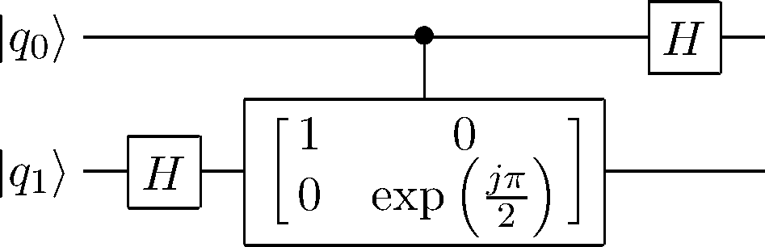

この記事は,
旧ブログ から移植された記事です. よって, その内容として,
旧ブログ に依存した文脈が含まれている可能性があります. 予めご了承下さい.
お題自由な学校のレポート課題内で, ショアのアルゴリズムを説明するために
QFT の概要について示したのだが, 折角なのでその内容の一部を抜粋し,
こちらのブログのほうにも載せておくことにした.
ショアのアルゴリズムについては, 調べればいくらでも出てくるし, 学会誌,
書籍等で分かり易く述べられていることも多いので,
本エントリで特別取り上げることはしないが, その大体は以下のアクティビティ図の手順の通りである.
ショアのアルゴリズムのアクティビティ図
なお, 私自身は量子力学, 量子コンピュータ分野における専門家ではないため, 注意してください.
間違った箇所, 不自然な箇所等ございましたら, ご報告いただけると幸いです.
まず, DFT を次のようにおく.
F ( t ) = ∑ x = 0 n − 1 f ( x ) exp ( − j 2 π t x n ) (1) \displaystyle F(t) = \sum_{x = 0}^{n-1} f(x)\exp(-j\dfrac{2\pi tx}{n}\tag{1}) F ( t ) = x = 0 ∑ n − 1 f ( x ) exp ( − j n 2 π t x ) ( 1 ) f ( x ) f(x) f ( x ) j j j 1 n \dfrac{1}{\sqrt{n}} n 1 ∣ 0 ⟩ , ⋯ , ∣ n − 1 ⟩ |0\rangle, \cdots, |n-1\rangle ∣0 ⟩ , ⋯ , ∣ n − 1 ⟩ ∑ x = 0 n − 1 f ( x ) ∣ x ⟩ \displaystyle \sum_{x=0}^{n-1} f(x)|x\rangle x = 0 ∑ n − 1 f ( x ) ∣ x ⟩ ∑ x = 0 n − 1 f ( x ) ∣ x ⟩ ↦ ∑ i = 0 n − 1 F ( i ) ∣ i ⟩ \displaystyle \sum_{x = 0}^{n-1} f(x)|x\rangle \mapsto \sum_{i = 0}^{n-1}F(i) |i\rangle x = 0 ∑ n − 1 f ( x ) ∣ x ⟩ ↦ i = 0 ∑ n − 1 F ( i ) ∣ i ⟩ ∣ x ⟩ ↦ 1 n ∑ k = 0 n − 1 exp ( − j 2 π x k n ) ∣ k ⟩ \displaystyle |x\rangle \mapsto \dfrac{1}{\sqrt{n}}\sum_{k=0}^{n-1}\exp(-j\dfrac{2\pi xk}{n}) |k\rangle ∣ x ⟩ ↦ n 1 k = 0 ∑ n − 1 exp ( − j n 2 π x k ) ∣ k ⟩ m m m 2 m 2^m 2 m ∣ x ⟩ ↦ 1 2 m ∑ k = 0 2 m − 1 exp ( − j 2 π x k 2 m ) ∣ k ⟩ \displaystyle |x\rangle \mapsto \dfrac{1}{\sqrt{2^m}}\sum_{k=0}^{2^m-1}\exp(-j\dfrac{2\pi xk}{2^m}) |k\rangle ∣ x ⟩ ↦ 2 m 1 k = 0 ∑ 2 m − 1 exp ( − j 2 m 2 π x k ) ∣ k ⟩ 1 1 1 exp ( j 2 π 2 k + 1 ) \exp(\dfrac{j2\pi}{2^{k+1}}) exp ( 2 k + 1 j 2 π )

アダマールゲートと制御位相シフトゲートによる 2 qubit QFT 量子回路
ここで ∣ q 1 ⟩ |q_1\rangle ∣ q 1 ⟩ ∣ 0 ⟩ + exp ( j π q 1 ) ∣ 1 ⟩ → ∣ 0 ⟩ + exp ( j π 2 ( 2 q 1 + q 0 ) ) ∣ 1 ⟩ (2) |0\rangle + \exp(j\pi q_{1})|1\rangle \to |0\rangle +
\exp(\dfrac{j\pi}{2}(2q_1+q_0))|1\rangle \tag{2} ∣0 ⟩ + exp ( jπ q 1 ) ∣1 ⟩ → ∣0 ⟩ + exp ( 2 jπ ( 2 q 1 + q 0 )) ∣1 ⟩ ( 2 ) ∣ q 0 ⟩ |q_0\rangle ∣ q 0 ⟩ ∣ 0 ⟩ + exp ( j π q 0 ) ∣ 1 ⟩ (3) |0\rangle + \exp(j\pi q_{0})|1\rangle \tag{3} ∣0 ⟩ + exp ( jπ q 0 ) ∣1 ⟩ ( 3 ) ( 2 ) (2) ( 2 ) ∣ a 0 ⟩ |a_0\rangle ∣ a 0 ⟩ ( 3 ) (3) ( 3 ) ∣ a 1 ⟩ |a_1\rangle ∣ a 1 ⟩ ∣ a 1 ⟩ ∣ a 0 ⟩ = { ∣ 0 ⟩ + exp ( j π q 0 ) ∣ 1 ⟩ } { ∣ 0 ⟩ + exp ( j π q 1 + j π q 0 2 ) ∣ 1 ⟩ } (4) |a_1\rangle |a_0\rangle = \left\{|0\rangle + \exp(j\pi q_0)|1\rangle\right\}\left\{|0\rangle + \exp(j\pi q_1 + \dfrac{j\pi q_0}{2})|1\rangle\right\}\tag{4} ∣ a 1 ⟩ ∣ a 0 ⟩ = { ∣0 ⟩ + exp ( jπ q 0 ) ∣1 ⟩ } { ∣0 ⟩ + exp ( jπ q 1 + 2 jπ q 0 ) ∣1 ⟩ } ( 4 ) q q q a a a 2 2 2 [ q 1 , q 0 ] , [ a 1 , a 0 ] [q_1, q_0],\ [a_1, a_0] [ q 1 , q 0 ] , [ a 1 , a 0 ] q = 2 q 1 + q 0 , a = 2 a 1 + a 0 q = 2q_1 + q_0,\ a = 2a_1+a_0 q = 2 q 1 + q 0 , a = 2 a 1 + a 0 ( 4 ) (4) ( 4 )
∣ a ⟩ = ∣ 0 ⟩ + exp ( j π 2 q ) ∣ 1 ⟩ + exp ( j π 2 q × 2 ) ∣ 2 ⟩ + exp ( j π 2 q × 3 ) ∣ 3 ⟩ |a\rangle = |0\rangle + \exp(\dfrac{j\pi}{2}q)|1\rangle +
\exp(\dfrac{j\pi}{2}q\times 2)|2\rangle + \exp(\dfrac{j\pi}{2}q\times 3)|3\rangle ∣ a ⟩ = ∣0 ⟩ + exp ( 2 jπ q ) ∣1 ⟩ + exp ( 2 jπ q × 2 ) ∣2 ⟩ + exp ( 2 jπ q × 3 ) ∣3 ⟩ ∣ a ⟩ |a\rangle ∣ a ⟩ ∣ q ⟩ |q\rangle ∣ q ⟩